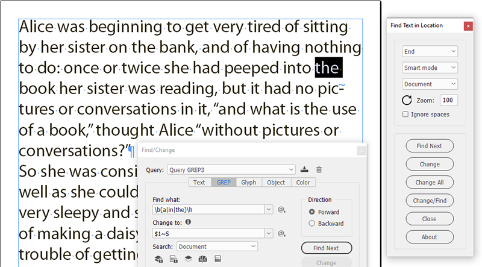
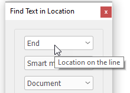
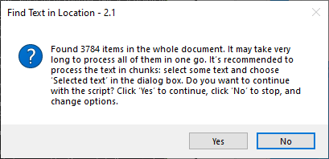
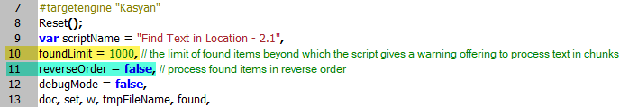

Find Text in Location
This script was created for and offered graciously by The Treasures of GREP.
Version 2.2. Developed by Kasyan Servetsky. Written and tested in InDesign 2022.
This is an ongoing, experimental, and crowd-funding project.
This script imitates the find-change dialog. Its purpose is to find regular expressions at the beginning and / or end of lines which InDesign doesn’t allow so far.

How it works:
You select the desired GREP settings in the Find/Change dialog box but instead of its Find (Next), Change, Change All, Change/Find buttons you use the analogous ones in the script´s dialog box.
There are three dropdown lists at the top of the dialog box. To see a brief description of a control, hover the cursor over it: a help tip will appear
.

In the topmost list you select the location on the line:
- Beginning
- End
- Both
Then you hit the Find button. If the text is found, it selects and displays the first occurrence of the found text, and the button changes to Find Next.
The second dropdown list — Mode — offers you to choose how the script identifies whether the found text is located at the beginning or end of the line.
There are two algorithms:
- Smart mode
- Compare lines
Smart mode, according to my tests, is faster so I recommend it. However, in some cases, it may not work. In this case, try to switch to the Compare lines mode.
The third dropdown list — What should be processed — defines the scope of your search:
- Document
- Selected story
- Selected text
With a long document, the script may find too many instances of text which may take much time to process. In such a case, it gives you a warning offering to process the text in chunks: select some text and choose the Selected text in the dialog box.

By default, the warning appears if more than 1,000 items are found. You can change this limit in the foundLimit variable at the top of the script.

By default, the script uses the forward direction, but you can set the reverseOrder variable to true so that to process found items in reverse order.
You can set the zoom level for displaying the found text in the Zoom field. Left to it, there’s the Reset button — — which acts as if you close and rerun the script. Use it when you change settings in the Find/Change dialog box, switch to, or open another document.
If you chose the Selected story, the script processes only the current story. The selection can be indicated by one of the following:
- A selected text frame
- Some selected text
- The cursor is placed into the text
Note: if the text frame has linked frames, all of them — the whole story — will be processed.
The Close button, as the name suggests, closes the dialog box and quits the script.
The About button leads you to this page. Make sure to hit it from time to time to check if a new version is available.
Found bugs to be fixed in the future
The ddlMode dropdown list that switches modes — "Smart mode" and "Compare lines" — has no onChange function. So, I think (not tested yet) when the user changes it, it won’t be updated on the fly. To work around it, after changing the mode, just close and reopen the dialog box (rerun the script).
If you have any feedback — complaints, comments, or suggestions — feel free to send me an e-mail putting Find Text in Location into the subject line. (Warning: unfortunately, I can’t reply to all the e-mails I get because of lack of time. Sorry in advance!)
If you found this script useful and want me to develop it further, consider supporting me by donating via PayPal directly to my e-mail: askoldich [at] yahoo [dot] com (Due to PayPal’s restrictions for Ukraine, I can’t have a Donate button on my site.)
Click here to download the latest version of the script.
See also Find duplicate characters/words at the beginning/end of lines